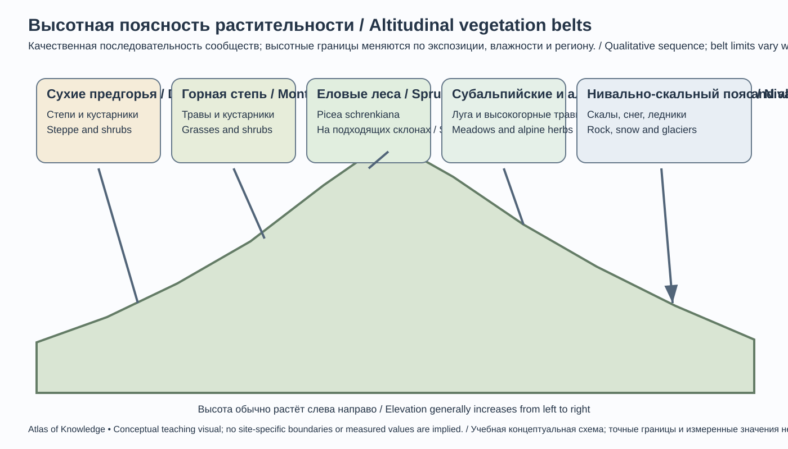
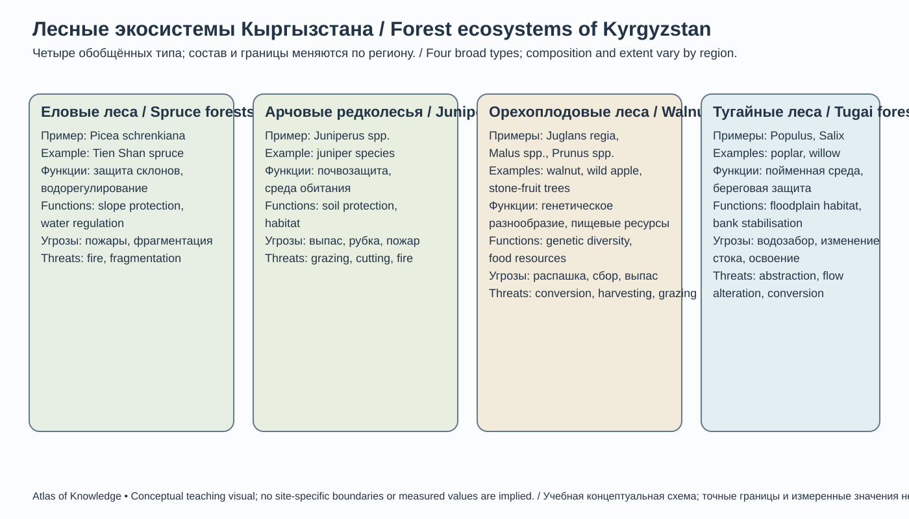
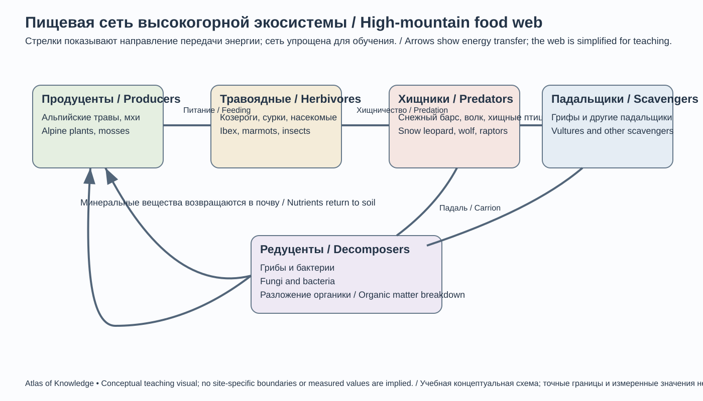
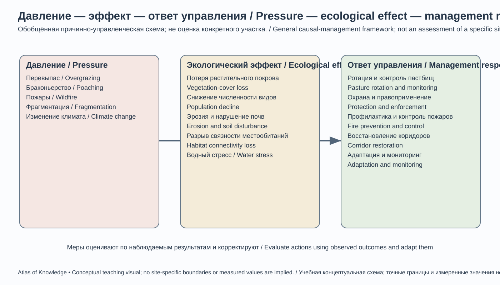
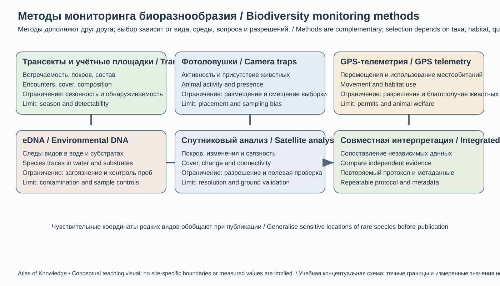

Глава 21. Растительный и животный мир Кыргызстана
Chapter 21. Flora and Fauna of Kyrgyzstan
Тема главы / Chapter theme: биоразнообразие горной страны, его происхождение, пространственное распределение, экологические связи и охрана.
Ключевая идея / Key idea: природное богатство Кыргызстана определяется не только количеством видов, но и разнообразием высотных поясов, мозаикой местообитаний, генетическими ресурсами диких растений и связностью горных экосистем.
21.1. Биогеографическое положение и происхождение биоразнообразия
Biogeographical Setting and Origins of Biodiversity
Кыргызстан расположен в пределах Палеарктической биогеографической области, на стыке центральноазиатских пустынно-степных, континентальных горных и западно-тянь-шаньских природных комплексов. Основу горной территории составляют Тянь-Шань и Памиро-Алай. Их хребты, межгорные котловины, ущелья, речные долины и высокогорные плато создают множество экологических ниш.
Биогеографическое разнообразие страны формируется несколькими факторами:
- Высотный градиент. На небольшом горизонтальном расстоянии сменяются жаркие сухие предгорья, степи, леса, субальпийские луга, альпийские сообщества и нивальные местообитания.
- Контраст увлажнения. Западные и северо-западные склоны, отдельные ущелья и орехоплодовые районы получают и удерживают больше влаги, чем многие внутренние котловины и подветренные склоны.
- Геологическое и почвенное разнообразие. Известняки, сланцы, граниты, рыхлые отложения и различные типы почв создают специфические местообитания.
- Изоляция горных массивов. Разделённые долинами и высокими хребтами популяции могут длительно развиваться относительно обособленно.
- История климата. Чередование холодных и тёплых, более влажных и засушливых периодов меняло ареалы видов и способствовало сохранению реликтовых популяций.
- Положение на путях миграций. Горные долины и перевалы служат сезонными маршрутами для животных и коридорами распространения растений.
Западный Тянь-Шань имеет особое международное значение: трансграничный объект Всемирного наследия ЮНЕСКО объединяет природные территории Кыргызстана, Казахстана и Узбекистана. Здесь сочетаются хвойные и лиственные леса, дикие плодовые деревья, горные луга и местообитания редких животных. ЮНЕСКО подчёркивает высокое видовое богатство и значительную долю центральноазиатских эндемиков в регионе.
Важно: границы биогеографических областей не совпадают с государственными границами и административными областями. Экологические процессы и ареалы видов трансграничны.
21.2. Флора: разнообразие, эндемизм и генетические ресурсы
Flora: Diversity, Endemism and Genetic Resources
Флора — совокупность видов растений определённой территории. При оценке флористического богатства необходимо указывать, какие группы организмов учитываются: сосудистые растения, мхи, водоросли, лишайники и грибы не являются одной таксономической группой. Поэтому оценки общего числа видов в разных публикациях могут различаться.
Для Кыргызстана характерно богатство горных сосудистых растений, включая степные, пустынные, луговые, лесные, скальные и высокогорные виды. Значительная часть разнообразия сосредоточена в Западном Тянь-Шане и Ферганско-Алайском горном узле. Многие локальные виды приурочены к отдельным хребтам, ущельям, выходам пород или специфическим почвам.
Эндемики и реликты
Эндемик — вид, естественный ареал которого ограничен определённой территорией. Эндемизм бывает локальным (например, отдельный хребет или долина) и региональным (часть Тянь-Шаня или Центральной Азии). Нельзя называть вид эндемиком Кыргызстана только потому, что он редок в стране: для этого требуется подтверждение границ его естественного ареала.
Реликт — сохранившийся представитель древней флоры или фауны, ареал которого сократился либо изменился по сравнению с прошлыми геологическими эпохами. Реликтовость не равнозначна эндемизму.
Для оценки эндемизма важны: - проверенные гербарные образцы и актуальная таксономия; - точные координаты находок и высотные отметки; - сведения о численности и динамике популяций; - различение естественных и заносных популяций; - сопоставление национальных списков с международными базами.
Дикие родичи культурных растений
Западный Тянь-Шань — один из важных мировых центров разнообразия и происхождения культурных плодовых и орехоплодовых растений. В природных сообществах встречаются дикие и близкие к культурным формам представители яблони, абрикоса, груши, сливы, фисташки, винограда, грецкого ореха и боярышника. Эти популяции являются частью генетических ресурсов сельского хозяйства.
Особенно важны: - яблоня Сиверса (Malus sieversii) — один из ключевых диких родичей культурной яблони; - абрикос (Prunus armeniaca; в части ботанической литературы используется родовое название Armeniaca) — дикие популяции и формы имеют значение для селекции; - грецкий орех (Juglans regia); - фисташка настоящая (Pistacia vera); - миндаль (Prunus dulcis и близкие дикие таксоны); - груши (Pyrus spp.), сливы (Prunus spp.) и виноград (Vitis spp.).
Генетическое разнообразие диких родичей может содержать признаки устойчивости к засухе, холоду, вредителям и болезням. Однако сохранение этих ресурсов требует защиты естественных местообитаний, а не только создания плантаций.
21.3. Высотная поясность растительности

21-B. Концептуальная последовательность сообществ; высотные границы не фиксированы и меняются по экспозиции, влажности и региону.Conceptual sequence of communities; elevation limits are not fixed and vary with aspect, moisture and region.
EN: Vegetation altitudinal profile from dry foothills to the nival-rock belt; show boundaries as approximate and dependent on slope aspect.
Altitudinal Zonation of Vegetation
Высотная поясность — закономерная смена природных комплексов с увеличением высоты. В Кыргызстане она выражена особенно отчётливо, но не имеет единой для всей страны схемы. Границы поясов меняются в зависимости от широты, экспозиции склона, осадков, ветра, рельефа, почв и истории землепользования.
| Высотный комплекс | Типичные сообщества | Экологические особенности |
|---|---|---|
| Нижние предгорья и сухие котловины | Полупустыни, эфемеровые сообщества, полынники, солянки | Дефицит влаги, резкая сезонность |
| Предгорные и среднегорные склоны | Степи, разнотравно-злаковые сообщества, кустарники | Сильная зависимость от экспозиции и выпаса |
| Среднегорья | Лиственные леса, плодовые редколесья, арчовые сообщества, ельники в подходящих условиях | Контраст увлажнения и температур |
| Верхняя граница леса и субальпийский пояс | Высокотравные луга, кустарнички, редколесья | Короткий вегетационный период |
| Альпийский пояс | Низкотравные луга, кобрезиевые и осоковые дерновины, подушковидные растения | Холод, ветер, маломощные почвы |
| Нивально-скальный пояс | Скалы, осыпи, ледники, разреженная специализированная растительность | Экстремальные условия, изолированные микроместообитания |
Это обобщённая схема, а не карта фиксированных высот. Например, лесная растительность может отсутствовать на подходящей высоте из-за сухости, лавин, пожаров или исторического сведения леса. Влажное ущелье может поддерживать лес значительно ниже или выше, чем соседний открытый склон.
Адаптации растений к горным условиям
- Низкорослая и подушковидная форма уменьшает воздействие ветра и сохраняет тепло.
- Глубокие или широко разветвлённые корни помогают использовать влагу и закрепляться на склонах.
- Опушение, восковой налёт и уменьшенная листовая поверхность снижают потерю воды.
- Короткий жизненный цикл позволяет эфемерам завершить развитие в благоприятный сезон.
- Подземные органы (луковицы, корневища, клубни) обеспечивают переживание неблагоприятного периода.
21.4. Лесные экосистемы Кыргызстана

21-C. Сводная учебная схема, а не карта распространения. Виды приведены как примеры; состав лесов меняется по месту и высоте.Summary teaching diagram, not a distribution map. Species are examples; forest composition varies by site and elevation.
EN: Comparative infographic of spruce, juniper, walnut-fruit and tugai forests, showing characteristic species, ecosystem functions and threats.
Forest Ecosystems of Kyrgyzstan
Леса занимают ограниченную долю территории страны, но имеют непропорционально большое экологическое значение. Они регулируют сток, защищают почвы от эрозии, удерживают снег, создают местообитания, накапливают углерод и поддерживают местные источники дохода.
Еловые леса
В Тянь-Шане широко известна ель Шренка (Picea schrenkiana). Еловые леса приурочены к горным склонам с подходящими температурой и увлажнением. Они особенно характерны для отдельных районов Северного и Внутреннего Тянь-Шаня. Ельники могут формировать чистые или смешанные древостои; их структура зависит от высоты, экспозиции, снежного режима и почв.
Еловые леса уязвимы к пожарам, чрезмерному выпасу в подросте, рубкам, вредителям и изменению гидротермического режима. Восстановление зрелого ельника происходит медленно.
Арчовые редколесья
Арча — общее название нескольких видов можжевельника рода Juniperus, а не один отдельный вид. Арчовые сообщества встречаются на сухих и каменистых склонах, часто образуют разреженные древостои и кустарниковые формы. Они важны для стабилизации склонов, защиты почв и поддержания горного биоразнообразия.
Различные виды арчи отличаются экологическими предпочтениями и высотным распределением. В научных и учебных материалах следует указывать вид только при надёжном определении.
Орехоплодовые и плодовые леса
Орехоплодовые леса Западного Тянь-Шаня, включая районы Арсланбоба и Сары-Челека, представляют исключительную природную и генетическую ценность. В них сочетаются грецкий орех, дикие плодовые деревья, клёны, боярышники, кустарники и травяной покров. Состав меняется по высоте, влажности и экспозиции.
Это не однородный «ореховый лес»: разные участки имеют различную структуру и набор древесных пород. К важным компонентам относятся: - грецкий орех (Juglans regia); - яблони рода Malus, включая яблоню Сиверса; - дикие абрикосы и сливы (Prunus spp.); - груши (Pyrus spp.); - боярышники (Crataegus spp.); - клёны (Acer spp.); - фисташка (Pistacia vera) в более сухих местообитаниях.
Тугайные и пойменные леса
В речных долинах встречаются пойменные древесно-кустарниковые сообщества с ивами (Salix spp.), тополями (Populus spp.), облепихой (Hippophae rhamnoides) и другими влаголюбивыми растениями. Их состояние зависит от естественного режима паводков, уровня грунтовых вод и хозяйственного использования пойм.
Факторы сохранения лесов
- Предотвращение незаконных рубок и повреждения подроста.
- Контроль пожаров и раннее обнаружение очагов.
- Сохранение естественного водного режима.
- Регулирование выпаса в лесных массивах и на участках возобновления.
- Защита старовозрастных деревьев и генетически ценных популяций.
- Восстановление местными видами и происхождениями посадочного материала.
- Мониторинг вредителей, болезней и климатических воздействий.
21.5. Растительность по регионам Кыргызстана
Regional Patterns of Vegetation
Северный Кыргызстан: Чуйская и Таласская долины
На равнинах и в предгорьях распространены степные, полупустынные и луговые сообщества, преобразованные сельским хозяйством и городской застройкой. В горных ущельях и на склонах встречаются кустарники, лиственные леса, арчовые участки и еловые леса. Таласский Ала-Тоо и Кыргызский хребет создают выраженные высотные градиенты.
Иссык-Кульская котловина
Растительность меняется от сухих степей и полупустынных участков прибрежной зоны до лугов, кустарников и высокогорных сообществ. На северных и южных склонах котловины различаются увлажнение и экспозиция. В восточной части и высокогорных долинах особенно важны пастбищные ландшафты.
Нарынская область и Внутренний Тянь-Шань
Характерны высокогорные степи, холодные полупустынные сообщества, субальпийские и альпийские пастбища, участки кустарников и локальные лесные сообщества. Континентальность климата и длительный снежный период ограничивают распространение лесов. Важную роль играют сезонные пастбища.
Западный Кыргызстан: Джалал-Абадская область
Западный Тянь-Шань отличается высокой мозаичностью лесов, плодовых сообществ, лугов и скальных местообитаний. Здесь находятся орехоплодовые леса, еловые и арчовые участки, а также важные природоохранные территории. Районы Арсланбоба, Сары-Челека, Беш-Арала и Падыша-Аты имеют большое значение для сохранения биоразнообразия.
Ошская область и Алай
На севере и в долинах сочетаются культурные ландшафты, сухие степи и кустарниковые сообщества. По мере подъёма в Алайскую долину и на склоны Алайского хребта усиливается роль горных степей, лугов и высокогорных пастбищ. Важны сезонные миграции копытных и сохранение связности местообитаний.
Баткенская область
В низкогорьях и сухих долинах преобладают засухоустойчивые сообщества: полынники, эфемеровые степи, кустарники и редколесья. На более влажных склонах встречаются арчовые и другие горные сообщества. Особую ценность имеют локальные популяции редких растений и природные участки, сохранившиеся среди интенсивно используемых земель.
21.6. Пастбища и сенокосы
Rangelands and Hay Meadows
Пастбища — важнейшая часть природных и хозяйственных систем Кыргызстана. Они обеспечивают кормовую базу животноводства, поддерживают традиционную мобильность скотоводства и формируют значительную часть открытых горных ландшафтов.
Продуктивность пастбища определяется не только общей массой травы, но и её питательной ценностью, сезонностью роста, доступностью воды, уклоном, почвами и устойчивостью растительного покрова.
Сезонная организация выпаса
Традиционно различают: - зимние пастбища — чаще в более тёплых и доступных долинах и предгорьях; - весенние пастбища — участки, где растительность начинает развиваться после схода снега; - летние пастбища (джайлоо) — высокогорные луга и степи; - осенние пастбища — переходные территории перед возвращением на зимовки.
Сезонная ротация снижает давление на отдельные участки, если сроки и нагрузка согласованы с восстановлением растительности. Само по себе перемещение стада не гарантирует устойчивости: необходимы учёт фактической кормовой ёмкости, водообеспеченности и состояния почв.
Признаки деградации
- уменьшение растительного покрова и оголение почвы;
- рост доли несъедобных, колючих или устойчивых к вытаптыванию растений;
- развитие троп и эрозионных промоин;
- уплотнение почвы и снижение инфильтрации;
- сокращение видового разнообразия;
- ухудшение восстановления травостоя после выпаса.
Устойчивое управление
Нужны оценка пастбищной ёмкости, ротация, сезонные ограничения, восстановление деградированных участков, защита водопоев от вытаптывания, контроль эрозии и участие местных пастбищных комитетов. Универсальной нормы нагрузки для всей страны нет: она должна рассчитываться для конкретного участка и сезона.
21.7. Фауна: основные группы и местообитания
Fauna: Major Groups and Habitats
Фауна Кыргызстана включает горных млекопитающих, хищников, копытных, многочисленных грызунов, разнообразных птиц, рептилий, амфибий, рыб и беспозвоночных. Полнота национальных списков меняется по мере исследований и уточнения таксономии.
Млекопитающие
К характерным группам относятся: - горные копытные: сибирский козерог (Capra sibirica), архары (Ovis ammon и внутривидовые формы), косуля (Capreolus spp.), марал (Cervus canadensis sibiricus — таксономическое положение и употребление названия требуют сверки с актуальным национальным списком); - хищники: снежный барс (Panthera uncia), волк (Canis lupus), рысь (Lynx lynx), бурый медведь (Ursus arctos), лисица (Vulpes vulpes), манул (Otocolobus manul) в подходящих районах; - мелкие и средние млекопитающие: сурки (Marmota spp.), пищухи (Ochotona spp.), зайцы, тушканчики, полёвки, летучие мыши и куньи.
Видовой состав и численность различаются по регионам. Наличие вида в историческом списке не означает, что он сегодня регулярно встречается на всей указанной территории.
Птицы
Горные экосистемы поддерживают хищных птиц, падальщиков, курообразных, водоплавающих и множество мелких воробьинообразных. Среди наиболее известных: - беркут (Aquila chrysaetos); - бородач (Gypaetus barbatus); - чёрный гриф (Aegypius monachus); - белоголовый сип (Gyps fulvus); - балобан (Falco cherrug); - улары (Tetraogallus spp.); - горные куропатки и кеклики; - водоплавающие птицы озёрных и болотных местообитаний.
Озёра Иссык-Куль, Сон-Куль и другие водоёмы важны как места гнездования, линьки, зимовки и остановок мигрирующих птиц. Значение конкретного водоёма меняется по сезонам.
Рептилии и амфибии
В сухих долинах и предгорьях встречаются ящерицы и змеи, в том числе виды, приспособленные к засушливым местообитаниям. Амфибии связаны с водоёмами, влажными лугами, родниками и поймами; их распространение ограничивается наличием подходящих мест размножения и влажных убежищ.
Не следует переносить сведения о ядовитости или опасности одного вида на всех змей региона. Определение должно выполняться по надёжным полевым признакам или специалистом.
Рыбы и водные беспозвоночные
Ихтиофауна рек и озёр неоднородна. В водоёмах присутствуют местные виды и интродуцированные человеком рыбы. В Иссык-Куле исторически важны эндемичные и локально специализированные формы, но состав сообщества изменялся вследствие вселения новых видов, промысла и преобразования местообитаний.
Для каждого водоёма необходимо различать: - естественно обитающие местные виды; - эндемичные виды и подвиды; - интродуцированные виды; - акклиматизированные и натурализовавшиеся популяции; - виды, исчезнувшие из отдельных водоёмов или существенно сократившие численность.
Беспозвоночные
Насекомые, пауки, моллюски и другие беспозвоночные обеспечивают опыление, разложение органики, почвообразование и служат пищей для позвоночных. Горные беспозвоночные часто имеют небольшие ареалы и высокую уязвимость к изменению микроклимата. Их недостаточная изученность не означает отсутствия природоохранной ценности.
21.8. Знаковые и охраняемые виды
Flagship and Protected Species
Снежный барс — ирбис (Panthera uncia)
Снежный барс — верховный хищник высокогорных экосистем Тянь-Шаня и Памиро-Алая. Он использует скальные участки, крутые склоны и горные долины, где доступны дикие копытные и другие кормовые объекты. Его присутствие зависит от достаточной площади местообитаний, связности горных коридоров и сохранности кормовой базы.
Глобальная категория IUCN для вида — Vulnerable (Уязвимый); её следует отличать от национального охранного статуса. Для Кыргызстана важно не смешивать разные оценки численности. Национальная оценка PASK, проведённая в 2020–2024 годах с использованием 905 фотоловушек на 589 площадках, сообщила оценку примерно 300 взрослых особей с 95%-ным доверительным интервалом 246–366. В публикации 2026 года указано, что анализ основан на 43 сессиях обследований и моделях пространственного анализа повторных отловов; сама публикация прошла редакционное рассмотрение, но не внешнее рецензирование. В марте 2026 года представители Министерства природных ресурсов публично сообщили об оценке свыше 550 особей, а в октябре 2026 года руководитель профильного департамента назвал диапазон около 500–550. Эти оценки нельзя считать напрямую сопоставимыми: публичные сообщения не раскрывают достаточно подробно единицу учёта, методику, период и доверительные интервалы. Поэтому в учебном тексте следует приводить их раздельно, с датой и источником, а не выбирать одну цифру как бесспорную. Основные угрозы включают браконьерство, конфликты с животноводами, сокращение кормовой базы, фрагментацию местообитаний и инфраструктурное воздействие.
Архар (Ovis ammon)
Архар — крупный дикий баран горных и высокогорных ландшафтов. В Кыргызстане встречаются различные популяции и формы архара; название «архар Марко Поло» обычно относится к крупной высокогорной форме, связанной прежде всего с Памиром. Не следует автоматически относить каждую популяцию Кыргызстана к этой форме без проверки таксономической и географической принадлежности.
Сибирский козерог (Capra sibirica)
Козерог населяет скалистые горные склоны и крутые ущелья. Он является важной добычей снежного барса и одновременно объектом охоты и природоохранного мониторинга. Для его сохранения необходимы охрана мест размножения, контроль незаконной охоты и поддержание связности горных местообитаний.
Другие значимые виды
- бурый медведь (Ursus arctos);
- рысь (Lynx lynx);
- манул (Otocolobus manul);
- марал и косуля;
- сурки, включая локально ограниченные виды;
- беркут, бородач, грифы и балобан;
- редкие высокогорные и степные птицы.
Редкие растения
Особую природоохранную ценность имеют дикорастущие тюльпаны и другие луковичные растения. Среди известных центральноазиатских видов — тюльпан Грейга (Tulipa greigii), тюльпан Кауфмана (Tulipa kaufmanniana) и тюльпан Колпаковского (Tulipa kolpakowskiana). Их нельзя собирать или выкапывать в природе. Для определения охранного статуса каждого вида необходимо сверять актуальную редакцию национальной Красной книги и международную оценку IUCN, если она существует.
21.9. Озёрные, речные и прибрежные экосистемы
Lake, River and Riparian Ecosystems
Водные экосистемы Кыргызстана включают высокогорные озёра, реки, родники, заболоченные участки, поймы и искусственные водоёмы. Они поддерживают водные растения, беспозвоночных, рыб, амфибий и птиц.
Иссык-Куль
Иссык-Куль — крупное высокогорное озеро с уникальными физико-химическими условиями и собственной историей формирования водного сообщества. Его экологическое состояние зависит от водного баланса, поступления загрязняющих веществ, состояния прибрежной зоны, рыболовства, туризма и интродукции видов.
Сон-Куль и Чатыр-Куль
Эти высокогорные озёра и прилегающие заболоченные участки важны для водоплавающих и околоводных птиц. Сезонность ледового режима и колебания уровня воды определяют доступность кормовых и гнездовых местообитаний.
Сары-Челек и горные водоёмы
Озеро Сары-Челек входит в природный комплекс Западного Тянь-Шаня. Его ценность связана не только с водной средой, но и с окружающими лесными и горными экосистемами.
Основные угрозы водному биоразнообразию
- загрязнение коммунальными, сельскохозяйственными и промышленными стоками;
- изменение естественного гидрологического режима;
- разрушение береговой растительности;
- чрезмерный или нерегулируемый промысел;
- интродукция чужеродных видов;
- эвтрофикация и накопление питательных веществ;
- климатические изменения температуры воды, ледового режима и стока.
21.10. Экологические связи и функционирование экосистем

21-H. Стрелки показывают передачу энергии и вещества в упрощённой сети; реальные пищевые связи сложнее и меняются по местообитаниям и сезонам.Arrows show energy and matter transfer in a simplified web; real feeding relationships are more complex and vary by habitat and season.
EN: Food web of a high-mountain ecosystem showing plants, herbivores, predators, scavengers and decomposers; arrows indicate energy transfer.
Ecological Interactions and Ecosystem Function
Биоразнообразие — это не просто перечень видов. Экосистема функционирует благодаря связям между организмами и физической средой.
Опыление
Пчёлы, шмели, бабочки, мухи и некоторые другие животные переносят пыльцу между цветками. Опыление обеспечивает размножение многих дикорастущих и культурных растений. Сокращение разнообразия опылителей может снижать устойчивость растительных сообществ и урожайность.
Распространение семян
Птицы и млекопитающие распространяют семена, поедая плоды или перенося их на шерсти и лапах. Ветер и вода также перемещают семена. Такие процессы помогают лесам восстанавливаться и поддерживают генетический обмен между участками.
Пищевые сети
Пример упрощённой горной пищевой сети:
Солнечная энергия → травы и кустарники → травоядные (архар, козерог, сурок) → хищники (снежный барс, волк) → падальщики и редуценты.
Реальные пищевые сети сложнее: один вид может использовать несколько кормовых ресурсов и иметь разных естественных врагов. Падальщики и микроорганизмы возвращают вещества в круговорот.
Экосистемные услуги
- регулирование водного стока и защита водосборов;
- предотвращение эрозии и стабилизация склонов;
- опыление и поддержание плодородия;
- генетические ресурсы для сельского хозяйства;
- накопление углерода;
- кормовые, лекарственные и пищевые ресурсы при устойчивом использовании;
- культурная, научная, образовательная и рекреационная ценность.
21.11. Основные угрозы биоразнообразию

21-I. Концептуальная схема для обсуждения причин и мер; она не доказывает причинность для конкретной территории и не оценивает эффективность мер без мониторинга.Conceptual discussion framework; it does not prove causation at a specific site or assess management effectiveness without monitoring.
EN: Pressure–ecological effect–management response infographic for overgrazing, poaching, fires, fragmentation and climate change.
Major Threats to Biodiversity
| Угроза | Механизм воздействия | Возможные последствия |
|---|---|---|
| Изменение климата | Смещение температурных и влажностных условий, изменение снегового режима | Перемещение ареалов, сокращение холодолюбивых местообитаний |
| Браконьерство | Прямое изъятие животных | Сокращение популяций, нарушение возрастной структуры |
| Перевыпас | Вытаптывание, выборочное поедание, уплотнение почв | Деградация травостоя и эрозия |
| Фрагментация местообитаний | Дороги, инфраструктура, освоение долин | Изоляция популяций и снижение генетического обмена |
| Пожары и незаконные рубки | Утрата лесного покрова и подроста | Замедление восстановления, изменение местообитаний |
| Добыча полезных ископаемых | Нарушение земель, шум, пыль, загрязнение | Локальная потеря и деградация местообитаний |
| Загрязнение | Стоки, отходы, агрохимикаты | Токсическое воздействие и эвтрофикация |
| Незаконный сбор растений | Выкапывание луковиц, сбор редких лекарственных растений | Исчезновение локальных популяций |
| Инвазивные виды | Конкуренция, хищничество, перенос болезней | Изменение структуры сообществ |
Угрозы взаимодействуют. Например, климатический стресс может усиливать последствия чрезмерного выпаса, а дорога — облегчать доступ браконьеров к ранее труднодоступным участкам. Поэтому оценивать воздействие следует на уровне ландшафта и экосистемы.
21.12. Охрана биоразнообразия и природоохранные инструменты
Biodiversity Conservation and Policy Instruments
Национальная Красная книга
Красная книга Кыргызской Республики — национальный инструмент учёта редких и находящихся под угрозой видов. Она служит основой для планирования охраны, научного мониторинга и регулирования использования видов.
В Добровольном национальном обзоре Кыргызской Республики за 2025 год указаны 57 видов птиц, 23 вида млекопитающих, 2 вида амфибий, 8 видов рептилий, 7 видов рыб, 18 видов членистоногих и 87 видов высших растений и грибов в национальном Красном списке. В сообщении Министерства природных ресурсов от 9 июня 2026 года для высших растений и грибов указано уже 89 видов; по остальным перечисленным группам приведены те же числа. Документы не объясняют расхождение 87/89, поэтому эти значения следует показывать как датированные сведения соответствующих источников, а не объединять в одну якобы окончательную цифру. 5 июня 2026 года Министерство и Институт биологии НАН КР заключили соглашение о подготовке обновлённой Красной книги: проект рассчитан на 24 месяца, а выпуск новой печатной версии запланирован на июнь 2028 года. До завершения этой работы национальные списки и статусы следует цитировать с указанием документа и даты; приведённые количества не являются числом всех угрожаемых видов страны.
Международные инструменты
- IUCN Red List — глобальная оценка риска исчезновения видов. Категории IUCN не тождественны национальному законодательному статусу.
- CITES — регулирует международную торговлю видами, включёнными в приложения Конвенции. Включение в приложение не означает автоматически запрет любых действий с видом внутри страны.
- Convention on Biological Diversity (CBD) — международная рамочная конвенция по сохранению биоразнообразия, устойчивому использованию его компонентов и справедливому распределению выгод.
- UNESCO World Heritage — признаёт выдающуюся универсальную ценность природных территорий, в том числе Западного Тянь-Шаня.
- UNESCO Man and the Biosphere Programme (MAB) — поддерживает биосферные резерватные подходы, объединяющие охрану природы, устойчивое развитие и научный мониторинг.
Охраняемые территории и экологические коридоры
Национальные заповедники, природные парки, заказники и биосферные территории сохраняют местообитания и природные процессы. Среди значимых территорий Западного Тянь-Шаня — Сары-Челекский биосферный резерват, Беш-Аральский государственный заповедник, Падыша-Атинский и другие охраняемые природные комплексы.
Охраняемая территория не должна рассматриваться как изолированный «остров». Экологические коридоры обеспечивают перемещение животных, распространение растений и обмен между популяциями. Для горных видов важны проходы между хребтами, долинами и сезонными пастбищами.
В 2025 году был представлен проект Государственной программы Кыргызской Республики по сохранению биоразнообразия до 2040 года, также известный как Национальная стратегия и план действий по сохранению биоразнообразия (NBSAP). На национальном семинаре 18 ноября 2025 года участники согласовали проект и рекомендовали его к утверждению; ПРООН сообщила, что до утверждения Кабинетом министров документ должен пройти дальнейшее рассмотрение. Поэтому в настоящем разделе NBSAP рассматривается как подготовленная стратегическая рамка, а не как доказанно вступивший в силу нормативный акт. Перед публикацией необходимо проверить окончательное решение Кабинета министров и утверждённые индикаторы.
21.13. Методы изучения флоры и фауны

21-J. Методы взаимодополняемы; выбор зависит от таксона, вопроса, сезона, разрешений и контроля качества. Чувствительные координаты редких видов обобщают.Methods are complementary; selection depends on taxa, question, season, permits and quality control. Generalise sensitive locations of rare species.
EN: Comparative monitoring diagram showing transects, plots, camera traps, GPS, eDNA and satellite analysis as complementary methods.
Methods for Studying Flora and Fauna
| Метод | Что изучают | Ограничения и требования |
|---|---|---|
| Гербаризация | Растения, морфологические признаки, распространение | Сбор допустим только по разрешениям и без ущерба редким популяциям |
| Геоботанические площадки | Состав, проективное покрытие, структуру растительности | Нужны повторные учёты в сопоставимые сезоны |
| Трансекты | Изменения сообществ по высоте или градиенту среды | Важно учитывать экспозицию, уклон и сезонность |
| Учёты животных | Численность и встречаемость | Обнаруживаемость видов неодинакова |
| Фотоловушки | Скрытные млекопитающие, активность, относительная встречаемость | Не дают автоматически точную численность популяции |
| GPS/GNSS-ошейники | Перемещения и использование местообитаний | Требуют разрешений, этического протокола и оценки риска для животных |
| ДНК-баркодинг | Подтверждение видовой принадлежности образцов | Результат зависит от качества референсной базы |
| eDNA | Следы ДНК видов в воде, почве и других пробах | Наличие ДНК не всегда доказывает присутствие живой особи в точке отбора |
| Акустический мониторинг | Птицы, амфибии, летучие мыши | Нужна проверка автоматической классификации записей |
| Спутниковые данные и ДЗЗ | Изменение лесов, пожары, растительный покров, снежный режим | Пиксель не всегда позволяет определить вид или состояние отдельной популяции |
| Citizen science | Наблюдения граждан и фотофиксация | Требуются проверка координат, даты и определения вида |
Принципы качественного мониторинга
- Использовать одинаковые методики при повторных обследованиях.
- Указывать дату, координаты, высоту, наблюдателя и условия наблюдения.
- Различать отсутствие вида и отсутствие его обнаружения.
- Хранить первичные данные и фотографии с метаданными.
- Проверять таксономические определения экспертами.
- Не публиковать точные координаты уязвимых популяций, если это повышает риск браконьерства или незаконного сбора.
21.13.1. Разобранный пример: оценка проективного покрытия растенийWorked Example: Estimating Plant Cover
Исследователь разместил на пастбище учебную квадратную рамку, разделённую на 25 одинаковых ячеек. В 15 ячейках присутствует растительность. Для упрощённой оценки примем, что каждая ячейка имеет одинаковую площадь и учитывается как занятая, если в ней есть растительный покров.
Доля занятых ячеек:
[ C=\frac{15}{25}\times100\%=60\% ]
Оценочное проективное покрытие составляет 60%. Это означает, что при выбранном способе учёта растительность проецируется на 60% площади рамки.
Ограничения метода: результат зависит от размера рамки, числа ячеек, сезона, наблюдателя и того, учитываются ли перекрывающиеся ярусы растений. Простое деление числа занятых ячеек даёт грубую оценку, а не точное измерение биомассы или продуктивности пастбища. Для сравнения участков нужно применять одинаковый протокол и делать несколько повторов в разных точках.
Проверьте себя: если растительность обнаружена в 18 из 30 одинаковых ячеек, каким будет оценочное покрытие?
A researcher places a square sampling frame in a pasture. The frame is divided into 25 equal cells, and vegetation is present in 15 of them. For this simplified estimate, assume that all cells have equal area and count a cell as occupied when plant cover is present.
The proportion of occupied cells is:
[ C=\frac{15}{25}\times100\%=60\% ]
The estimated plant cover is 60%. This means that, under the chosen observation method, vegetation is projected over 60% of the frame’s area.
Method limitations: the result depends on frame size, the number of cells, season, observer and whether overlapping vegetation layers are counted separately. Dividing occupied cells by total cells provides a rough estimate, not a direct measurement of biomass or pasture productivity. Comparisons between sites require the same protocol and repeated samples at several locations.
Check your understanding: if vegetation is present in 18 of 30 equal cells, what is the estimated cover?
21.13.2. Почему отсутствие наблюдений не доказывает отсутствие видаWhy a Lack of Sightings Does Not Prove a Species Is Absent
При полевых исследованиях важно различать два утверждения: «вид не обнаружен во время обследования» и «вид отсутствует на территории». Первое описывает результат конкретного наблюдения; второе требует гораздо более сильных доказательств. Животное может быть активным ночью, скрываться в густой растительности, избегать человека или находиться вне обследованного участка. Растение может быть незаметно вне периода цветения или в неблагоприятный сезон.
Обнаруживаемость — вероятность зарегистрировать вид при условии, что он действительно присутствует на обследуемом участке. Она зависит от метода, продолжительности наблюдения, погоды, сезона, опыта наблюдателя, плотности растительности и поведения вида. Поэтому простое сравнение числа встреч за один выезд может вводить в заблуждение.
Пример повторных наблюдений. Допустим, вероятность обнаружить присутствующий вид за один стандартизированный выезд условно равна 0,4. Если обследования независимы и вероятность обнаружения остаётся одинаковой, вероятность не заметить вид за три выезда составит:
[ P(\text{не обнаружен})=(1-0{,}4)^3=0{,}216 ]
Следовательно, вероятность обнаружить его хотя бы один раз за три выезда равна:
[ 1-0{,}216=0{,}784 ]
То есть около 78,4%. Это учебная модель, а не универсальная характеристика реальных видов. Независимость наблюдений и постоянство обнаруживаемости часто нарушаются: погода и сезон меняются, а повторные наблюдения могут быть связаны между собой.
Как повысить надёжность обследования: 1. Повторять наблюдения по единому протоколу в сопоставимые сезоны и временные интервалы. 2. Фиксировать не только наличие вида, но и продолжительность поиска, площадь обследования и условия. 3. Использовать подходящий методу видовой группы инструмент: фотоловушки, акустические регистраторы, трансекты, следы и другие признаки присутствия. 4. Разделять подтверждённые регистрации, вероятные определения и неподтверждённые сообщения. 5. При сравнении территорий учитывать различия в усилии наблюдения и вероятности обнаружения. 6. Для редких и уязвимых видов соблюдать разрешительные и этические требования, не раскрывать чувствительные координаты.
Учебное задание. Составьте протокол наблюдения за птицами или млекопитающими на двух участках. Установите одинаковую продолжительность и число выездов, запишите погоду, время, маршрут и признаки присутствия. Объясните, почему большее число регистраций на одном участке ещё не обязательно означает более высокую численность животных.
In field studies, it is important to distinguish between two statements: “the species was not detected during the survey” and “the species is absent from the area.” The first describes the result of a particular observation; the second requires much stronger evidence. An animal may be nocturnal, hidden in dense vegetation, avoid people or remain outside the surveyed area. A plant may be difficult to identify outside its flowering period or in an unsuitable season.
Detectability is the probability of recording a species when it is actually present at the surveyed site. It depends on the method, survey duration, weather, season, observer experience, vegetation density and species behaviour. A simple comparison of sightings from a single visit can therefore be misleading.
Example of repeated surveys. Assume that the probability of detecting a species during one standardized visit, given that it is present, is 0.4. If surveys are independent and detection probability remains constant, the probability of missing the species on all three visits is:
[ P(\text{not detected})=(1-0.4)^3=0.216 ]
The probability of detecting it at least once during the three visits is therefore:
[ 1-0.216=0.784 ]
That is approximately 78.4%. This is a teaching model, not a universal value for real species. Independence and constant detectability are often violated because weather and seasons change and repeated observations may be correlated.
Ways to improve survey reliability: 1. Repeat observations using a consistent protocol during comparable seasons and time intervals. 2. Record search duration, survey area and conditions, not just whether the species was found. 3. Choose methods suitable for the taxonomic group, such as camera traps, acoustic recorders, transects, tracks and other signs of presence. 4. Distinguish confirmed records from probable identifications and unverified reports. 5. Account for differences in survey effort and detectability when comparing sites. 6. Follow permit and ethical requirements for rare or vulnerable species, and avoid publishing sensitive coordinates.
Learning activity. Design a bird or mammal survey protocol for two sites. Set the same survey duration and number of visits, and record weather, time, route and signs of presence. Explain why a higher number of records at one site does not necessarily mean that animal abundance is higher there.
21.1. Biogeographical Setting and Origins of Biodiversity
Kyrgyzstan lies within the Palaearctic biogeographical realm, at the junction of Central Asian desert and steppe systems, continental mountain ecosystems and the Western Tien Shan. The Tien Shan and Pamir-Alay form the country's main mountain systems. Their ranges, intermontane basins, gorges, river valleys and high plateaus create many ecological niches.
The country's biogeographical diversity is shaped by several factors: 1. Elevation gradient: dry foothills, steppes, forests, subalpine meadows, alpine communities and nival habitats occur over short horizontal distances. 2. Moisture contrasts: western and north-western slopes, some gorges and fruit-and-nut forest areas receive and retain more moisture than many interior basins and leeward slopes. 3. Geological and soil diversity: limestone, schist, granite, unconsolidated deposits and different soil types create specific habitats. 4. Isolation of mountain massifs: populations separated by valleys and high ridges may evolve relatively independently over long periods. 5. Climate history: alternating cold and warm, wetter and drier periods changed species ranges and helped preserve relict populations. 6. Migration routes: mountain valleys and passes serve as seasonal routes for animals and dispersal corridors for plants.
The Western Tien Shan has particular international significance. The transboundary UNESCO World Heritage property includes natural areas in Kyrgyzstan, Kazakhstan and Uzbekistan. It contains coniferous and broadleaf forests, wild fruit trees, mountain meadows and habitats of rare animals. UNESCO highlights the region's high species richness and significant share of Central Asian endemics.
Biogeographical boundaries do not coincide with state borders or administrative regions. Ecological processes and species ranges are transboundary.
21.2. Flora: Diversity, Endemism and Genetic Resources
Flora is the set of plant species occurring in a defined territory. Assessments of floristic richness must specify which groups are included: vascular plants, mosses, algae, lichens and fungi are not one taxonomic group. Estimates of total species numbers may therefore differ between publications.
Kyrgyzstan has rich mountain vascular-plant diversity, including steppe, desert, meadow, forest, rocky and high-mountain species. A substantial share of this diversity is concentrated in the Western Tien Shan and the Fergana–Alay mountain region. Many local species are associated with particular ranges, gorges, rock outcrops or specialised soils.
An endemic is a species whose natural range is restricted to a particular area. Endemism may be local, such as one range or valley, or regional, such as part of the Tien Shan or Central Asia. A species should not be called endemic to Kyrgyzstan merely because it is rare in the country; its natural range must be verified.
A relict is a surviving representative of an ancient flora or fauna whose range has contracted or changed since earlier geological periods. Relict status is not the same as endemism.
Assessment of endemism requires verified herbarium specimens and current taxonomy; accurate coordinates and elevation records; information on population size and trends; distinction between native and introduced populations; and comparison of national lists with international databases.
Wild relatives of cultivated plants. The Western Tien Shan is an important global centre of diversity and origin for cultivated fruit and nut crops. Natural communities contain wild and crop-related forms of apple, apricot, pear, plum, pistachio, grape, walnut and hawthorn. These populations are part of the genetic resources of agriculture.
Important taxa include Sievers' apple (Malus sieversii), a key wild relative of the cultivated apple; apricot (Prunus armeniaca; some botanical literature uses the genus name Armeniaca); walnut (Juglans regia); pistachio (Pistacia vera); almond (Prunus dulcis and related wild taxa); pears (Pyrus spp.); plums (Prunus spp.); and grapes (Vitis spp.).
Genetic diversity in wild relatives may include traits associated with drought, cold, pests and disease resistance. Conservation requires protecting natural habitats, not merely establishing plantations.
21.3. Altitudinal Zonation of Vegetation
Altitudinal zonation is the systematic change in natural communities with increasing elevation. It is particularly pronounced in Kyrgyzstan but does not follow one uniform national scheme. Belt boundaries vary with latitude, slope aspect, precipitation, wind, relief, soils and land-use history.
| Elevation complex | Typical communities | Ecological characteristics |
|---|---|---|
| Lower foothills and dry basins | Semi-deserts, ephemeral communities, wormwood and saltwort vegetation | Moisture deficit and strong seasonality |
| Foothill and middle-mountain slopes | Steppes, mixed-grass communities and shrubs | Strong dependence on slope aspect and grazing |
| Middle mountains | Broadleaf forests, wild-fruit woodlands, juniper communities and spruce forests where conditions are suitable | Contrasts in moisture and temperature |
| Upper forest limit and subalpine belt | Tall-herb meadows, dwarf shrubs and open woodland | Short growing season |
| Alpine belt | Short-grass meadows, sedge and Kobresia turf, cushion plants | Cold, wind and thin soils |
| Nival and rocky belt | Cliffs, scree, glaciers and sparse specialised vegetation | Extreme conditions and isolated microhabitats |
This is a generalised scheme, not a map of fixed elevation boundaries. Forest may be absent at otherwise suitable elevations because of aridity, avalanches, fires or historical deforestation. A moist gorge may support forest substantially lower or higher than a neighbouring open slope.
Plant adaptations to mountain conditions include low-growing and cushion forms that reduce wind exposure and conserve heat; deep or widely spreading roots that access moisture and anchor plants on slopes; leaf hairs, waxy coatings and reduced leaf area that limit water loss; short life cycles that allow ephemerals to complete growth during favourable seasons; and underground organs such as bulbs, rhizomes and tubers that allow plants to survive unfavourable periods.
21.4. Forest Ecosystems of Kyrgyzstan
Forests occupy a limited share of the country's territory but have ecological importance far beyond their area. They regulate runoff, protect soils from erosion, retain snow, provide habitats, store carbon and support local livelihoods.
Spruce forests. Schrenk's spruce (Picea schrenkiana) is widespread in the Tien Shan. Spruce forests occur on mountain slopes with suitable temperature and moisture conditions and are especially characteristic of some areas of the Northern and Inner Tien Shan. They may form pure or mixed stands; their structure depends on elevation, aspect, snow regime and soil.
Spruce forests are vulnerable to fire, excessive grazing of young growth, logging, pests and changes in hydrothermal conditions. Recovery of a mature spruce forest is slow.
Juniper open woodlands. The term archa refers to several juniper species in the genus Juniperus, not to one species. Juniper communities occur on dry and rocky slopes and often form open woodlands or shrub-like stands. They help stabilise slopes, protect soils and support mountain biodiversity.
Juniper species differ in ecological preferences and altitudinal distribution. Scientific and educational texts should identify species only when the determination is reliable.
Walnut and fruit forests. The walnut-fruit forests of the Western Tien Shan, including areas around Arslanbob and Sary-Chelek, have exceptional natural and genetic value. They combine walnut, wild fruit trees, maples, hawthorns, shrubs and herbaceous cover. Composition varies with elevation, moisture and slope aspect.
These are not uniform “walnut forests”: different sites have different structures and tree species. Important components include walnut (Juglans regia); apples (Malus spp.), including Sievers' apple; wild apricots and plums (Prunus spp.); pears (Pyrus spp.); hawthorns (Crataegus spp.); maples (Acer spp.); and pistachio (Pistacia vera) in drier habitats.
Tugai and riparian forests. River valleys contain floodplain woodland and shrub communities with willows (Salix spp.), poplars (Populus spp.), sea buckthorn (Hippophae rhamnoides) and other moisture-loving plants. Their condition depends on natural flood regimes, groundwater levels and land use in floodplains.
Forest conservation priorities include preventing illegal logging and damage to regeneration; fire prevention and early detection; maintaining natural water regimes; regulating grazing in forest areas and regeneration sites; protecting old trees and genetically valuable populations; restoring with native species and locally appropriate planting material; and monitoring pests, disease and climate impacts.
21.5. Regional Patterns of Vegetation
Northern Kyrgyzstan: Chuy and Talas valleys. Plains and foothills contain steppe, semi-desert and meadow communities transformed by agriculture and urban development. Mountain gorges and slopes support shrubs, broadleaf forests, juniper areas and spruce forests. The Talas Ala-Too and Kyrgyz Range create strong elevation gradients.
Issyk-Kul Basin. Vegetation changes from dry steppe and semi-desert areas near the shore to meadows, shrubs and high-mountain communities. Moisture and slope aspect differ between the northern and southern sides of the basin. Pasture landscapes are particularly important in the eastern part and high valleys.
Naryn Region and Inner Tien Shan. High basins and plateaus are dominated by steppe, meadow and alpine pasture communities, with limited forest cover. Short growing seasons and cold winters shape vegetation composition and seasonal grazing.
Western Kyrgyzstan: Jalal-Abad Region. The region contains some of the country's most valuable walnut-fruit forests, broadleaf communities, juniper woodlands, riverine forests and mountain meadows. Strong differences in moisture and elevation create a diverse vegetation mosaic.
Osh Region and Alay. Vegetation ranges from warm foothill steppes and shrubs to high-mountain meadows and nival communities. The Alay Valley and surrounding ranges support seasonal pastures and specialised mountain plants.
Batken Region. Dry foothills and mountain slopes contain semi-desert and steppe communities, shrubs, pistachio and almond habitats in suitable locations, and mountain vegetation at higher elevations. Water availability and land-use pressure are important controls.
21.6. Rangelands and Hay Meadows
Pastures and hay meadows are important components of the rural economy and mountain ecosystems. Their productivity depends on plant composition, soil moisture, precipitation, elevation, grazing intensity and seasonal management.
Seasonal grazing is organised around winter pastures, spring and autumn pastures, and high-mountain summer pastures (jailoo). Movement between these areas allows vegetation to recover, but it depends on access routes, water points, weather and local institutions.
Signs of pasture degradation may include reduced vegetation cover; expansion of bare ground; dominance of unpalatable or disturbance-tolerant species; soil compaction; erosion and gully formation; reduced productivity; and loss of plant diversity.
Sustainable management includes regulating livestock numbers and timing; rotating grazing areas; restoring degraded sites; maintaining water points and access routes; protecting steep slopes and riparian zones; monitoring vegetation condition; and involving local pasture-user associations and communities.
21.7. Fauna: Major Groups and Habitats
Kyrgyzstan's fauna includes mountain mammals, predators, ungulates, numerous rodents, diverse birds, reptiles, amphibians, fish and invertebrates. National species lists change as research advances and taxonomy is revised.
Mammals. Characteristic groups include mountain ungulates such as Siberian ibex (Capra sibirica), argali (Ovis ammon and intraspecific forms), roe deer (Capreolus spp.) and red deer or maral (taxonomic placement and use of the name should be checked against the current national list); predators such as snow leopard (Panthera uncia), wolf (Canis lupus), Eurasian lynx (Lynx lynx), brown bear (Ursus arctos), red fox (Vulpes vulpes) and Pallas's cat (Otocolobus manul) in suitable areas; and small or medium mammals such as marmots (Marmota spp.), pikas (Ochotona spp.), hares, jerboas, voles, bats and mustelids.
Species composition and abundance differ among regions. A historical record does not mean that a species is currently common throughout the entire area once listed.
Birds. Mountain ecosystems support raptors, scavengers, galliform birds, waterbirds and many small passerines. Notable species include the golden eagle (Aquila chrysaetos), bearded vulture (Gypaetus barbatus), cinereous vulture (Aegypius monachus), griffon vulture (Gyps fulvus), saker falcon (Falco cherrug), snowcocks (Tetraogallus spp.), partridges and chukars, and waterbirds associated with lakes and wetlands.
Issyk-Kul, Son-Kul and other water bodies are important for nesting, moulting, wintering and stopovers of migratory birds. The significance of each water body changes seasonally.
Reptiles and amphibians. Dry valleys and foothills support lizards and snakes, including species adapted to arid habitats. Amphibians depend on water bodies, wet meadows, springs and floodplains; their distribution is limited by suitable breeding sites and moist refuges. Venomousness or danger associated with one species must not be generalised to all snakes in the region. Identification should be based on reliable field characters or expert confirmation.
Fish and aquatic invertebrates. The fish fauna of rivers and lakes is heterogeneous. Water bodies contain native species as well as fish introduced by people. Issyk-Kul has historically supported endemic and locally specialised forms, but community composition has changed through introductions, fishing and habitat modification.
For each water body, distinguish native species; endemic species and subspecies; introduced species; acclimatised and naturalised populations; and species that have disappeared from particular water bodies or experienced major declines.
Invertebrates. Insects, spiders, molluscs and other invertebrates provide pollination, decomposition, soil formation and food for vertebrates. Mountain invertebrates often have small ranges and high vulnerability to microclimatic change. Limited study does not mean low conservation value.
21.8. Flagship and Protected Species
Snow leopard (Panthera uncia). The snow leopard is an apex predator of the high-mountain ecosystems of the Tien Shan and Pamir-Alay. It uses rocky terrain, steep slopes and mountain valleys where wild ungulates and other prey are available. Its persistence depends on sufficiently large habitats, connected mountain corridors and healthy prey populations.
The current global IUCN category is Vulnerable. National legal status and the international IUCN category are different systems and should be presented separately. A national PASK assessment conducted in 2020–2024 with 905 camera traps at 589 locations estimated approximately 300 adult snow leopards (95% confidence interval: 246–366). A 2026 article describing this assessment states that its analysis used 43 survey sessions and spatial capture–recapture models; the article underwent editorial review but not external peer review. In March 2026, Ministry representatives publicly reported an estimate of more than 550 animals; on 27 October 2026, the head of the Ministry's biodiversity department gave a range of approximately 500–550. These public estimates cannot be treated as directly comparable with the PASK estimate because their units, methods, survey periods and confidence intervals have not been reported in sufficient detail. They should be presented separately with dates and sources, not combined into a single population trend. Major threats include poaching, conflict with livestock owners, decline in prey, habitat fragmentation and infrastructure impacts.
Argali (Ovis ammon). Argali are large wild sheep of mountain and high-mountain landscapes. Different populations and forms occur in Kyrgyzstan. The name “Marco Polo sheep” usually refers to a large high-altitude form primarily associated with the Pamir. Not every Kyrgyzstan population should automatically be assigned to that form without checking taxonomic and geographic evidence.
Siberian ibex (Capra sibirica). Ibex inhabit rocky mountain slopes and steep gorges. They are important prey for snow leopards and are also subject to hunting and conservation monitoring. Conservation requires protection of breeding areas, control of illegal hunting and maintenance of connected mountain habitats.
Other important species include brown bear, lynx, Pallas's cat, red deer and roe deer, marmots, golden eagle, bearded vulture, other vultures, saker falcon and rare high-mountain and steppe birds.
Rare plants. Wild tulips and other bulbous plants have special conservation value. Well-known Central Asian species include Greig's tulip (Tulipa greigii), Kaufmann's tulip (Tulipa kaufmanniana) and Kolpakovsky's tulip (Tulipa kolpakowskiana). They must not be collected or dug up in the wild. The conservation status of each species must be checked against the current national Red Book and the IUCN assessment where available.
21.9. Lake, River and Riparian Ecosystems
Aquatic ecosystems in Kyrgyzstan include high-mountain lakes, rivers, springs, wetlands, floodplains and artificial water bodies. They support aquatic plants, invertebrates, fish, amphibians and birds.
Issyk-Kul is a large high-mountain lake with distinctive physical and chemical conditions and its own ecological history. Its condition depends on the water balance, pollutant inputs, shoreline condition, fisheries, tourism and species introductions.
Son-Kul and Chatyr-Kul, together with adjacent wetlands, are important for waterbirds and species associated with shorelines. Seasonal ice cover and water-level fluctuations determine the availability of feeding and nesting habitats.
Sary-Chelek is part of the Western Tien Shan natural complex. Its conservation value comes not only from the lake itself but also from surrounding forest and mountain ecosystems.
Major threats to aquatic biodiversity include municipal, agricultural and industrial pollution; changes in natural flow regimes; destruction of shoreline vegetation; excessive or unregulated fishing; introduction of alien species; eutrophication and nutrient accumulation; and climate-driven changes in water temperature, ice cover and runoff.
21.10. Ecological Interactions and Ecosystem Function
Biodiversity is not simply a list of species. Ecosystems function through relationships among organisms and the physical environment.
Pollination. Bees, bumblebees, butterflies, flies and other animals transfer pollen between flowers. Pollination supports reproduction of many wild and cultivated plants. A decline in pollinator diversity may reduce the resilience of plant communities and crop yields.
Seed dispersal. Birds and mammals disperse seeds by eating fruits or carrying them on fur and feet. Wind and water also move seeds. These processes help forests regenerate and support genetic exchange among habitat patches.
Food webs. A simplified mountain food web may be represented as solar energy → grasses and shrubs → herbivores (argali, ibex, marmots) → predators (snow leopard, wolf) → scavengers and decomposers. Real food webs are more complex: one species may use several food resources and have several natural enemies. Scavengers and microorganisms return nutrients to ecological cycles.
Ecosystem services include regulation of river flow and protection of catchments; erosion prevention and slope stabilisation; pollination and soil fertility; genetic resources for agriculture; carbon storage; forage, medicinal and food resources when used sustainably; and cultural, scientific, educational and recreational values.
21.11. Major Threats to Biodiversity
Major threats interact with one another. Climate change can intensify the consequences of overgrazing, while roads may facilitate poaching in previously inaccessible areas. Impacts should therefore be assessed at landscape and ecosystem scales.
| Threat | Mechanism | Possible consequences |
|---|---|---|
| Climate change | Shifts in temperature, moisture and snow regime | Range shifts and loss of cold-adapted habitats |
| Poaching | Direct removal of animals | Population decline and altered age structure |
| Overgrazing | Trampling, selective feeding and soil compaction | Vegetation degradation and erosion |
| Habitat fragmentation | Roads, infrastructure and valley development | Population isolation and reduced genetic exchange |
| Fires and illegal logging | Loss of forest cover and regeneration | Slower recovery and habitat change |
| Mining | Land disturbance, noise, dust and pollution | Local habitat loss and degradation |
| Pollution | Wastewater, solid waste and agrochemicals | Toxic impacts and eutrophication |
| Illegal plant collection | Digging bulbs and collecting rare medicinal plants | Loss of local populations |
| Invasive species | Competition, predation and disease transmission | Changes in community structure |
21.12. Biodiversity Conservation and Policy Instruments
The Red Book of the Kyrgyz Republic is a national instrument for recording rare and threatened species. It supports conservation planning, scientific monitoring and regulation of species use.
The Kyrgyz Republic's 2025 Voluntary National Review reports 57 bird species, 23 mammal species, 2 amphibian species, 8 reptile species, 7 fish species, 18 arthropod species, and 87 species of higher plants and fungi in the national Red List. A Ministry of Natural Resources update dated 9 June 2026 reports 89 higher-plant and fungi species, while giving the same figures for the other listed groups. The available documents do not explain the difference between 87 and 89; these figures should therefore be cited separately with their source and date, rather than merged into one supposedly definitive total. On 5 June 2026, the Ministry and the Institute of Biology of the National Academy of Sciences signed an agreement for a 24-month Red Book update project, with a new printed edition planned for June 2028. Until that work is completed, national lists and statuses should be cited with the document and date. These counts are not a count of all threatened species in the country.
International instruments include the IUCN Red List, which assesses global extinction risk; CITES, which regulates international trade in species listed in its Appendices; the Convention on Biological Diversity (CBD), which provides a framework for conservation, sustainable use and fair benefit-sharing; UNESCO World Heritage, which recognises natural properties of outstanding universal value, including the Western Tien Shan; and UNESCO's Man and the Biosphere Programme (MAB), which supports approaches combining conservation, sustainable development and scientific monitoring.
National nature reserves, natural parks, sanctuaries and biosphere territories conserve habitats and natural processes. Important protected areas of the Western Tien Shan include the Sary-Chelek Biosphere Reserve, Besh-Aral State Nature Reserve, Padysha-Ata and other protected natural complexes.
A protected area should not be treated as an isolated island. Ecological corridors support animal movement, plant dispersal and exchange among populations. For mountain species, passages between ranges, valleys and seasonal pastures are important.
In 2025, a draft State Programme of the Kyrgyz Republic on Biodiversity Conservation until 2040, also known as the National Biodiversity Strategy and Action Plan (NBSAP), was presented. At the national workshop on 18 November 2025, participants endorsed the draft and recommended it for approval; UNDP reported that the revised draft would undergo further review by the Cabinet of Ministers. This section therefore treats the NBSAP as a prepared strategic framework, not as a legal instrument proven to have entered into force. Before publication, check the Cabinet's final approval decision and the adopted indicators.
21.13. Methods for Studying Flora and Fauna
| Method | What it studies | Limitations and requirements |
|---|---|---|
| Herbarium collection | Plants, morphology and distribution | Collection requires permits and must not damage rare populations |
| Vegetation plots | Composition, projected cover and vegetation structure | Repeated surveys should use comparable seasons |
| Transects | Community changes along elevation or environmental gradients | Aspect, slope and seasonality must be considered |
| Animal surveys | Abundance and occurrence | Species detectability differs |
| Camera traps | Elusive mammals, activity and relative occurrence | Do not automatically provide exact population size |
| GPS/GNSS collars | Movement and habitat use | Require permits, an ethical protocol and assessment of risks to animals |
| DNA barcoding | Confirmation of specimen identity | Results depend on the quality of reference databases |
| Environmental DNA (eDNA) | Traces of species DNA in water, soil and other samples | DNA detection does not always prove a living individual is present at the sampling point |
| Acoustic monitoring | Birds, amphibians and bats | Automated sound classification requires verification |
| Satellite data and remote sensing | Forest change, fires, vegetation cover and snow regime | A pixel may not identify a species or the condition of an individual population |
| Citizen science | Public observations and photographs | Coordinates, dates and species identifications require validation |
Good monitoring practice includes using the same methods in repeat surveys; recording date, coordinates, elevation, observer and conditions; distinguishing absence from non-detection; preserving primary data and photographs with metadata; checking taxonomic identifications with experts; and avoiding publication of precise coordinates of vulnerable populations where this could increase poaching or illegal collection risks.
21.14. Практические работы
1. Altitudinal vegetation zonation. Select a mountain transect and describe the sequence of vegetation communities from foothills to the nival zone. Record elevation, aspect, slope, moisture and evidence of land use. Explain why belt boundaries are approximate.
2. Comparing forest ecosystems. Compare spruce, juniper and walnut-fruit forest communities. Describe their ecological conditions, dominant species, regeneration, ecosystem functions and main threats. Do not treat all juniper communities as one species or all walnut forests as uniform.
3. Pasture field description. Using a safe, permitted site, record vegetation cover, dominant plant groups, bare soil, signs of grazing, erosion and water availability. Use a consistent sampling method and repeat observations.
4. Habitat assessment for a rare animal. Select a flagship species and describe its habitat requirements, prey or food resources, movement corridors and threats. Use verified sources and avoid disclosing sensitive coordinates.
5. Camera-trap monitoring. Design a monitoring plan that specifies camera placement criteria, survey duration, effort, metadata, species-identification checks and ethical safeguards. Explain why the number of photographs is not automatically the population size.
6. Satellite assessment of vegetation. Compare vegetation indices or land-cover products for two dates. Use comparable seasons and explain why spectral change does not always indicate a change in species composition or ecosystem condition.
7. Checking conservation status. Select a plant or animal species. Compare its national legal status, Red Book listing, IUCN assessment and CITES status where relevant. State the date and source for each system and explain why the categories are not interchangeable.
Practical Activities
Практическая работа 1. Высотная поясность растительности
Задача: построить схему смены растительных сообществ от предгорий к высокогорью.
- Выберите горный маршрут или поперечный профиль.
- Отметьте высоту, экспозицию и характер рельефа.
- По картам и проверенным полевым данным выделите растительные сообщества.
- Сравните северный и южный склоны.
- Объясните, почему границы поясов не совпадают с одинаковыми высотными отметками.
Результат: высотный профиль с поясами растительности и краткими пояснениями.
Практическая работа 2. Сравнение лесных экосистем
Сопоставьте еловый лес, арчовое редколесье и орехоплодовый лес по породному составу, влажности, почвам, высоте, возобновлению и экологическим функциям.
Результат: сравнительная таблица и вывод о различиях устойчивости экосистем.
Практическая работа 3. Полевое описание пастбища
На безопасном и разрешённом участке заложите учебную площадку. Оцените проективное покрытие, высоту травостоя, наличие оголённой почвы, следы выпаса и эрозии. Не выкапывайте растения и не собирайте охраняемые виды.
Результат: паспорт пастбищного участка и рекомендации по его использованию.
Практическая работа 4. Анализ местообитания редкого животного
Выберите вид (например, снежного барса или архара). По надёжным картам и публикациям определите типы местообитаний, кормовые ресурсы, барьеры перемещения и основные угрозы.
Результат: карта факторов пригодности местообитаний; не наносите точные координаты уязвимых особей и логовищ.
Практическая работа 5. Мониторинг биоразнообразия по фотоловушкам
Используя открытый учебный набор изображений, сгруппируйте снимки по видам и времени суток. Обсудите, почему число фотографий не равно численности животных.
Результат: диаграмма частоты регистраций с описанием ограничений метода.
Практическая работа 6. Оценка состояния растительного покрова по спутниковым данным
Используйте снимки Sentinel-2 или Landsat для сравнения двух дат. Рассчитайте NDVI либо другой подходящий индекс и сопоставьте изменения с известными условиями землепользования.
Результат: карта изменений растительного покрова. Отметьте, что индекс не определяет видовой состав и сам по себе не доказывает деградацию.
21.15. Контрольные вопросы
- Which biogeographical factors shape the biodiversity of Kyrgyzstan?
- How does an endemic species differ from a relict species?
- Why are wild relatives of cultivated plants important genetic resources?
- Why do altitudinal vegetation belts not have identical elevation boundaries across the country?
- Which forest ecosystems are characteristic of Kyrgyzstan?
- Why is the term archa not the name of one juniper species?
- How does seasonal grazing influence pasture condition?
- Which major animal groups inhabit the Tien Shan and Pamir-Alay?
- Why should historical species records not automatically be treated as evidence of current distribution?
- What are the main threats to snow leopards and other mountain mammals?
- Why are high-mountain lakes important for waterbirds?
- How do pollination and seed dispersal support ecosystem functioning?
- How do habitat fragmentation and invasive species affect biodiversity?
- How does the national Red Book differ from the IUCN Red List and CITES?
- Why is a protected area not sufficient without ecological connectivity?
- What is detectability, and why does non-detection not prove absence?
- Which ethical and methodological requirements apply to biodiversity monitoring?
Review Questions
- Почему биоразнообразие Кыргызстана отличается высокой пространственной мозаичностью?
- Чем эндемик отличается от реликта?
- Почему высотные пояса растительности не имеют одинаковых границ на всех склонах?
- Каковы экологические функции еловых, арчовых и орехоплодовых лесов?
- Почему дикие родичи культурных плодовых растений важны для продовольственной безопасности?
- Какие признаки указывают на деградацию пастбища?
- Какую роль снежный барс играет в горной пищевой сети?
- Почему озёрные экосистемы уязвимы к интродукции чужеродных видов?
- Чем национальная Красная книга отличается от глобального Красного списка IUCN?
- Почему охрана отдельных участков недостаточна без экологических коридоров?
- Какие ограничения имеют фотоловушки, eDNA и спутниковый мониторинг?
- Как изменение климата может повлиять на высокогорные виды?
21.16. Ключевые понятияKey Terms
| Русский термин | English term | Определение |
|---|---|---|
| Биоразнообразие | Biodiversity | Разнообразие генов, видов и экосистем |
| Флора | Flora | Совокупность видов растений территории |
| Фауна | Fauna | Совокупность видов животных территории |
| Эндемик | Endemic species | Вид с естественным ареалом, ограниченным определённой территорией |
| Реликт | Relict species | Сохранившийся представитель древней биоты |
| Ареал | Range | Географическая область распространения вида |
| Высотная поясность | Altitudinal zonation | Закономерная смена природных комплексов с высотой |
| Фитоценоз | Plant community | Сообщество растений на определённом участке |
| Арча | Juniper | Общее местное название можжевельников рода Juniperus |
| Орехоплодовый лес | Walnut-fruit forest | Лесное сообщество с участием грецкого ореха и диких плодовых пород |
| Пастбищная ёмкость | Grazing capacity | Допустимая нагрузка скота при сохранении устойчивости пастбища |
| Инвазивный вид | Invasive species | Чужеродный вид, распространяющийся и вызывающий экологический или иной ущерб |
| Экологический коридор | Ecological corridor | Пространство, обеспечивающее перемещение организмов между местообитаниями |
| Фотоловушка | Camera trap | Автоматическая камера для регистрации животных |
| eDNA | Environmental DNA | ДНК организмов, обнаруживаемая в пробах окружающей среды |
| Генетические ресурсы | Genetic resources | Наследственный материал, имеющий фактическую или потенциальную ценность |
| Экосистемные услуги | Ecosystem services | Выгоды и функции, обеспечиваемые экосистемами для общества |
21.19. Основные источники и литература
Selected References and Further Reading
- UNESCO World Heritage Centre. Western Tien-Shan, World Heritage List, property no. 1490. https://whc.unesco.org/en/list/1490/
- UNESCO World Heritage Centre. Decision 40 COM 8B.9: Western Tien-Shan. https://whc.unesco.org/en/decisions/6788/
- United Nations Development Programme (UNDP) Kyrgyzstan. Specially Protected Nature Areas of the Western Tian Shan in Kyrgyzstan (2023). https://www.undp.org/kyrgyzstan/publications/specially-protected-nature-areas-western-tian-shan-kyrgyzstan
- UNDP Kyrgyzstan. Kyrgyzstan Presents its National Biodiversity Conservation Programme Until 2040 (18 November 2025). https://www.undp.org/kyrgyzstan/press-releases/kyrgyzstan-presents-its-national-biodiversity-conservation-programme-until-2040
- Ministry of Natural Resources, Ecology and Technical Supervision of the Kyrgyz Republic. State Programme on Biodiversity Conservation until 2040 presented, 18 November 2025 (national workshop and draft status). https://www.mnr.gov.kg/ru/posts/news/v-kyrgyzstane-predstavlena-gosudarstvennuyu-programmu-po-soxraneniyu-biologiceskogo-raznoobraziya-do-2040-goda
- United Nations Kyrgyz Republic. Voluntary National Review 2025. Разделы о биоразнообразии и национальном Красном списке.https://kyrgyzstan.un.org/sites/default/files/2025-08/VNR%202025%20Kyrgyz%20Republic%20Report%20EN.pdf
- Министерство совместно с Национальной академией наук приступает к работе по обновлению Красной книги, 9 June 2026. https://egov.kg/ru/ministry/environment/news/23392Ministry of Natural Resources, Ecology and Technical Supervision of the Kyrgyz Republic.
- Подготовка новой Красной книги Кыргызской Республики, 14 October 2026; agreement dated 5 June 2026, 24-month project, planned publication June 2028. https://ibnaskr.org/red-data-book-kyrgyzstan-project-2026-2028Institute of Biology, National Academy of Sciences of the Kyrgyz Republic.
- Kubanychbekov, Z. et al. (2026). Snow Leopard (Panthera uncia) — Status in Kyrgyzstan. Snow Leopard Reports, 5: 26–33. DOI: 10.56510/slr.v5.63883. The article reports the PASK 2020–2024 national assessment (approximately 300 adults; 95% CI 246–366; 905 camera traps at 589 locations) and states that it did not undergo external peer review.
- Kabar. Snow leopard population exceeds up to 550 individuals in Kyrgyzstan, 9 March 2026; reports the Ministry's public estimate. https://en.kabar.kg/news/snow-leopard-population-exceeds-up-to-550-individuals-in-kyrgyzstan/
- 24.kg. Poaching contributed to decline in Kyrgyzstan’s snow leopard population, 27 October 2026; quotes the head of the Ministry's biodiversity department giving an estimate of around 500–550. https://24kg.bemint.pro/en/article/poaching-contributed-to-decline-in-kyrgyzstans-snow-leopard-population
- IUCN. The IUCN Red List of Threatened Species. https://www.iucnredlist.org/
- CITES. The CITES Appendices. https://cites.org/eng/app/appendices.php
- Convention on Biological Diversity. Kunming–Montreal Global Biodiversity Framework. https://www.cbd.int/gbf
- Global Biodiversity Information Facility (GBIF). Occurrence and taxonomy data. https://www.gbif.org/
- FAO. Global Forest Resources Assessment. https://www.fao.org/forest-resources-assessment/
- UNEP-WCMC. World Heritage Datasheets: Western Tien-Shan. https://world-heritage-datasheets.unep-wcmc.org/datasheet/output/site/western-tien-shan/
Примечание к библиографии: международные базы данных и оценки природоохранного статуса обновляются. Для каждого видового профиля необходимо сохранять дату обращения, версию таксономии и ссылку на конкретную карточку вида. Для окончательной публикации главы следует дополнить список первичными ботаническими и зоологическими исследованиями по отдельным хребтам и охраняемым территориям Кыргызстана.
Итог главыChapter conclusion
Растительный и животный мир Кыргызстана — результат длительной эволюции в условиях сложного горного рельефа, контрастного климата и пространственной изоляции местообитаний. Еловые и арчовые леса, орехоплодовые сообщества, высокогорные луга, степи, озёра и речные долины образуют взаимосвязанную систему. Сохранение биоразнообразия требует не только охраны отдельных редких видов, но и поддержания целостности ландшафтов, экологических коридоров, устойчивого пастбищепользования и научно обоснованного управления природными ресурсами.